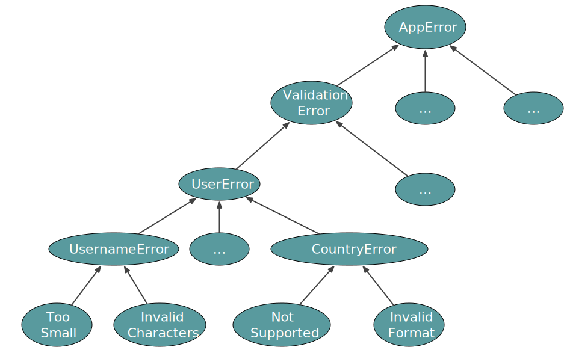
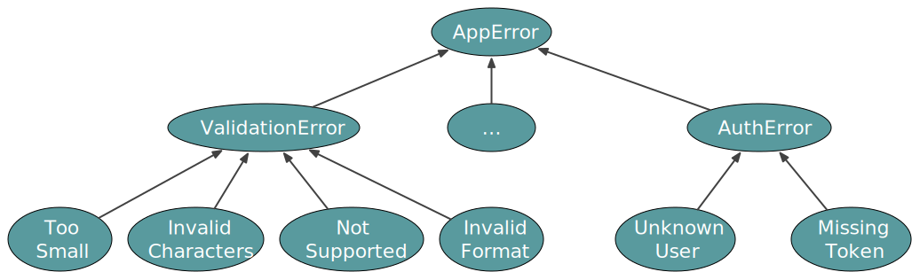

background-image: url(../img/fp-tower/website-background.svg) class: center, middle, white .title[Either] --- # Option <br><br> .forty-seven-left[ ```scala enum Option[+A] { case Some(value: A) case None } ``` ] --- # Option vs Try <br><br> .cols[ .forty-five[ ```scala enum Option[+A] { case Some(value: A) case None } ``` ] .ten[ ] .forty-five[ ```scala enum Try[+A] { case Success(value: A) case Failure(error: Throwable) } ``` ] .ten[ ] ] -- .forty-seven-left[ ## Pros .medium[ * Success & Failure are great names * Throwable is the main error type on the JVM ]] -- .forty-seven-right[ ## Cons .medium[ * Can't pattern match exhaustively * Can't accumulate errors ]] --- # Try .fifty-seven-left[ ```scala def submit(order: Order): Try[Order] = order.status match { case "Draft" => if(order.basket.isEmpty) Failure(EmptyBasketError) else Success(order.copy(status = "Submitted")) case other => Failure(InvalidCommandError("submit", order)) } ``` ] --- # Try .fifty-seven-left[ ```scala def submit(order: Order): Try[Order] submit(order).recover { case EmptyBasketError => ... case InvalidCommandError(status) => ... case other => ... } ``` ] --- # Try .forty-seven-left[ ```scala enum Try[+A] { case Success(value: A) case Failure(error: Throwable) } ``` ] <br><br><br><br><br><br> .sixty-seven-left[ ## Pros .medium[ * Success and Failure are great names * Throwable is the main error type of the JVM ]] --- class: medium-code # Try limitations .seventy-seven-left[ ```scala case class Order(total: Double, items: List[Item]) case class Item(id: String, quantity: Int, unitPrice: Double) def placeOrder(items: List[Item]): Try[Order] = { val total = items.map(item => item.quantity * item.unitPrice).sum val duplicates = items .groupBy(_.id) .collect{ case (id, items) if items.size > 1 => id } if(duplicates.nonEmpty) Failure(new Exception("Duplicated items: " + duplicates.mkString(",") )) else Success(Order(total, items)) } ``` ] --- class: medium-code # Try limitations .seventy-seven-left[ ```scala case class Order(total: Double, items: List[Item]) case class Item(id: String, quantity: Int, unitPrice: Double) def placeOrder(items: List[Item]): Try[Order] = { val total = items.map(item => item.quantity * item.unitPrice).sum val duplicates = items .groupBy(_.id) .collect{ case (id, items) if items.size > 1 => id } if(duplicates.nonEmpty) Failure(new Exception("Duplicated items: " + duplicates.mkString(",") )) else Success(Order(total, items)) } placeOrder(List( Item("`XYZ`", 2, 18.99), Item("AAA", 1, 8.45), Item("`XYZ`", 1, 10) )) // res: Try[Order] = `Failure(java.lang.Exception: Duplicated item: XYZ`) ``` ] --- class: medium-code # Try limitations .seventy-seven-left[ ```scala case class Order(total: Double, items: List[Item]) case class Item(id: String, quantity: Int, unitPrice: Double) def placeOrder(items: List[Item]): Try[Order] = { val total = items.map(item => item.quantity * item.unitPrice).sum val duplicates = items .groupBy(_.id) .collect{ case (id, items) if items.size > 1 => id } if(duplicates.nonEmpty) Failure(new Exception("Duplicated items: " + duplicates.mkString(",") )) else Success(Order(total, items)) } placeOrder(List( Item("XYZ", 2, 18.99), Item("AAA", 1, 8.45) )) // res: Try[Order] = `Success`(Order(46.43, ...)) ``` ] --- # Try vs Either <br><br> .cols[ .forty-five[ ```scala enum Try[+A] { case Success(value: A) case Failure(error: Throwable) } ``` ] .ten[ ] .forty-five[ ```scala enum Either[+E, +A] { case Right(value: A) case Left(value: E) } ``` ] .ten[ ] ] --- # Either <br><br> .fifty-seven-left[ ```scala enum Either[+E, +A] { case Right(value: A) case Left (value: E) } ``` ] <br> .fifty-seven-left[ ```scala val result1: Either[String, Int] = Right(5) val result2: Either[String, Int] = Left("Hello") ``` ] --- class: medium-code # Either vs Union Type (Scala 3) <br> .fifty-two-left[ ```scala enum Either[E, A] { case Left (value: E) case Right(value: A) } ``` ] <br> .fifty-two-left[ ```scala val result1: Either[String, Int] = Left("Hello") val result2: Either[String, Int] = Right(5) ``` ] .forty-two-right[ ```scala val result1: String | Int = "Hello" val result2: String | Int = 5 ``` ] --- class: medium-code # Either <br> .eighty-seven-left[ ```scala enum Either[E, A] { case Left (value: E) case Right(value: A) } ``` <br> ```scala val result: Either[String, Int] = Left("Username must be at least 8 characters long") ``` ] --- # Error Hierarchy <br> .eighty-seven-left[.center[ <img src="../img/foundation/user-error-1.svg" style="width:700px;"/> ]] --- # Error Hierarchy  --- # Error Hierarchy <br> .eighty-seven-left[.center[  ]]